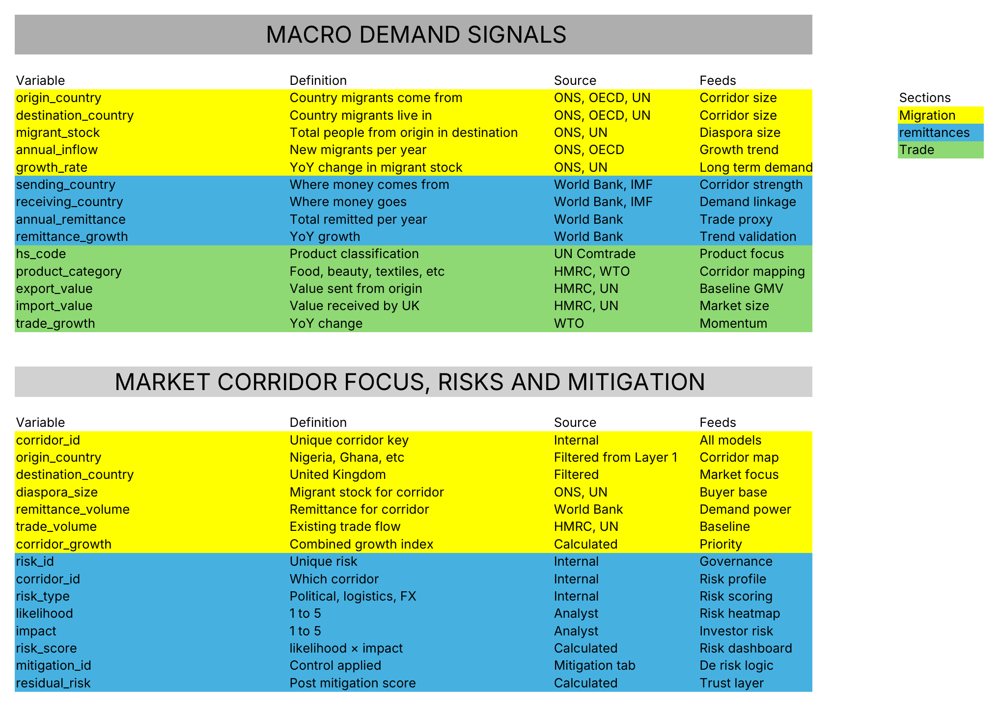
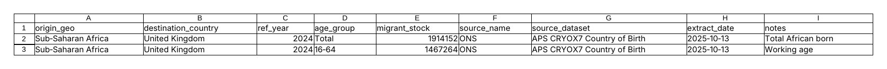
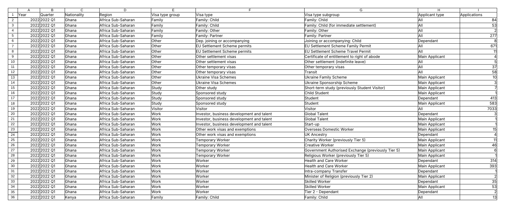
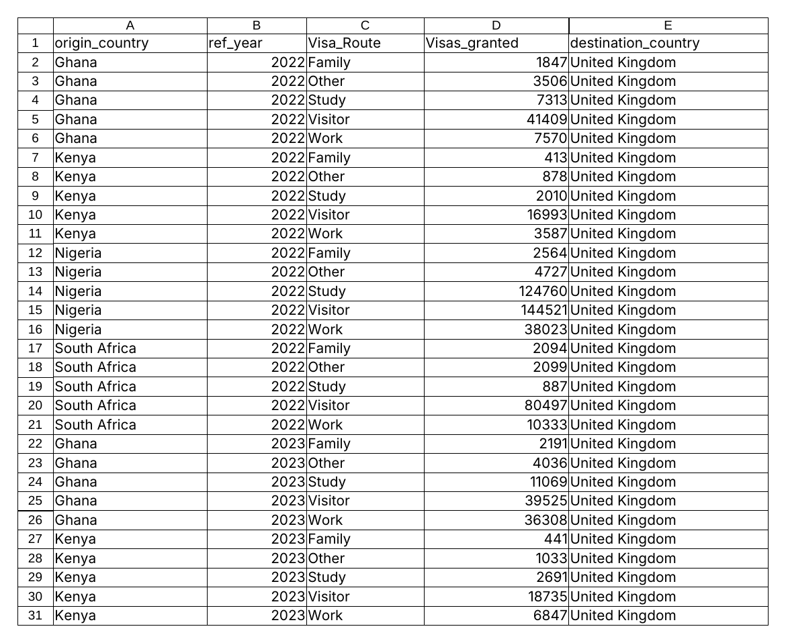
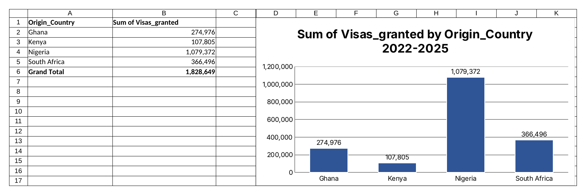
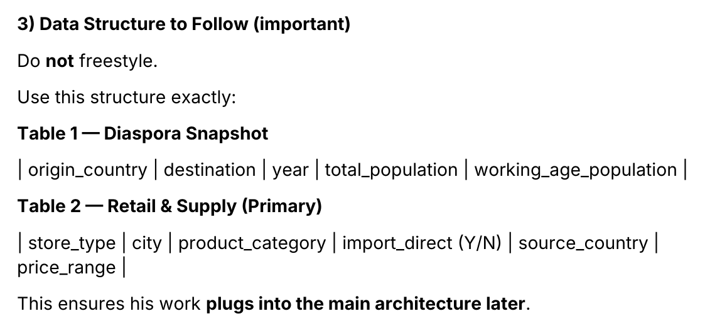

All work
Trade corridor data model
- My role Technical Business Analyst
- Venture Hexpres, a cross border trade platform
- Tools Excel, pivot tables, public data from ONS and the UK Home Office
The problem
The venture had to decide which trade corridors to enter first and show the demand behind each one. The evidence sat in separate public sources with no shared structure, so every new market meant starting the research again.
What I did
- Designed a data dictionary of 29 fields in two layers. Each field has a definition, a source and the model it feeds.
- Pulled UK Home Office entry clearance visa data and structured 2,616 records for four corridors into the UK: Nigeria, Ghana, Kenya and South Africa.
- Built a corridor flow model that rolls the raw records up by country, year and visa route, covering 1.83 million visas across four years.
- Recorded migrant stock from ONS with the source dataset and the extract date beside each figure, so every number can be traced and refreshed.
- Fixed the schema and issued it in an analyst brief, so the next corridor (Pakistan to UK) is built by following the same structure.
The work
Data dictionary

Source and extract date on every figure

Raw visa data

Corridor flow model

Visas by corridor

Schema issued for the next corridor

Result
A new corridor now starts from a fixed schema and a data refresh, not a fresh research project. The model gave the venture one place to compare corridors and one set of definitions to do it with.
Skills
Data architecture, data dictionary design, data modelling, source governance, market sizing, Excel, analyst briefing.